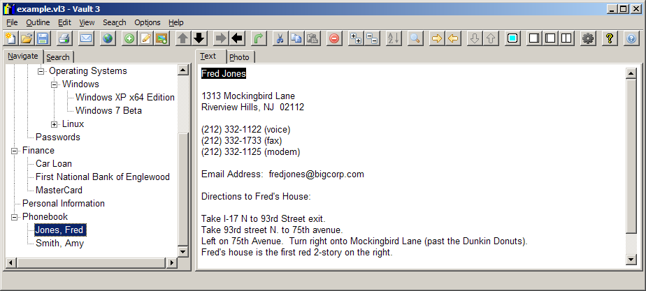
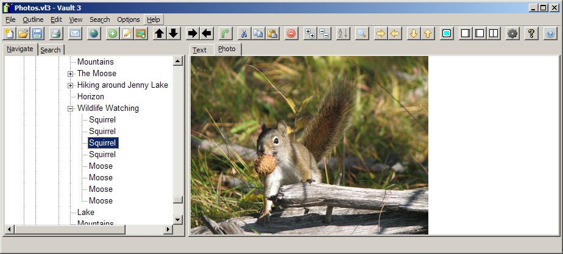

What is Vault 3?


Vault 3 stores your information and photographs as an outline. Vault 3 organizes your information into categories and sub-categories that you specify. Vault 3's outline
is easily and rapidly searchable. Vault 3 uses strong encryption to ensure the privacy of your personal data. Vault 3 can even run
slideshows of your photographs.
Vault 3 is:
- User-Friendly: Intuitive GUIs make it easy to use Vault 3's features. A comprehensive on-line help system covers all of Vault 3's features.
- Portable: Vault 3 currently runs on 32 and 64-bit Windows operating systems, 32 and 64-bit Linux GTK operating systems, and Android.
- Fast: Even on relatively low-performance hardware such as netbook computers.
- Secure: Password-protected documents are encrypted with 128-bit keys.
- Standards-Compliant: Documents are stored in Unicode format and can be imported and exported in XML format.
- Open Sourced: Licensed under the GNU GPL.
Vault 3 is developed and maintained by Eric Bergman-Terrell, www.EricBT.com.